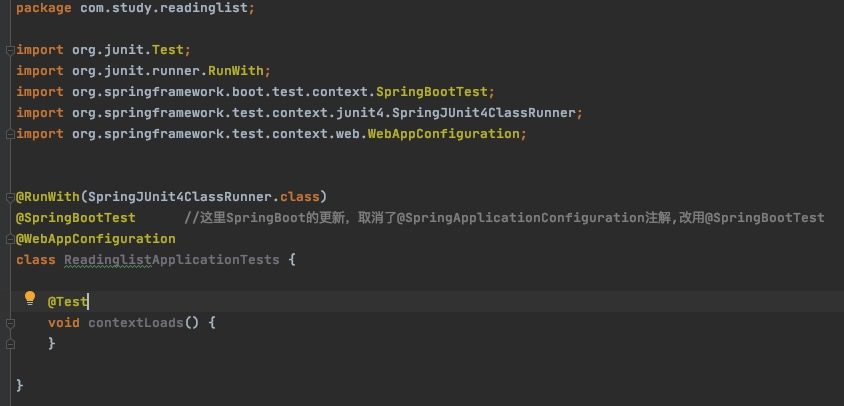

利用Spring Initializr创建的项目，其结构遵循传统maven或Gradle项目的布局。下面是SpringBoot的项目结构
启动引导Spring

ReaddingListApplication在SpringBoot应用程序里有俩个作用：配置和启动引导。
@SpringBootApplication开启了Spring的组件扫描和SpringBoot的自动配置功能。实际上，@SpringBootApplication将三个有用的注解组合在了一起：
- Spring的@Configuration：标明该类使用Spring基于Java的配置。
- Spring的@ComponentScan：启用组件扫描，这样写的Web控制器类和其他组件才能被自动发现并注册为Spring应用程序上下文里的Bean。
- SpringBoot的@EnableAutoConfiguration：这一行配置开启了SpringBoot自动配置的魔力。
测试SpringBoot应用程序

Initializr还提供了一个测试类的骨架，可以基于它为你的应用程序编写测试。但ReadingListApplicationTests不止是个用于测试的占位符，他还是一个例子，告诉你如何为SpringBoot应用程序编写测试。
一个典型的Spring集成测试会使用@ContextConfiguration注解标识如何加载Spring的应用程序上下文。但是，为了充分发挥SpringBoot的魔力，这里使用@SpringApplicationnConfiguration注解.ReadinglistApplicationTests使用@SpringApplicationConfiguration注解从ReadingListApplicationn配置类里加载Spring应用程序上下文。
ReadingListApplicationTests里还有一个简单的测试方法，即contextLoads()。实际上它就是一个孔方法，但是它足以证明应用程序上下文加载没有问题。
配置应用程序属性
Initializr生成的application.properties文件是一个空文件。该文件可以很方便的帮你细粒度的调整SpringBoot的自动配置。你还可以用他来指定应用程序代码所需的配置项。另外，你可以不用告诉SpringBoot为你加载application.properties，只要它存在就会被加载。